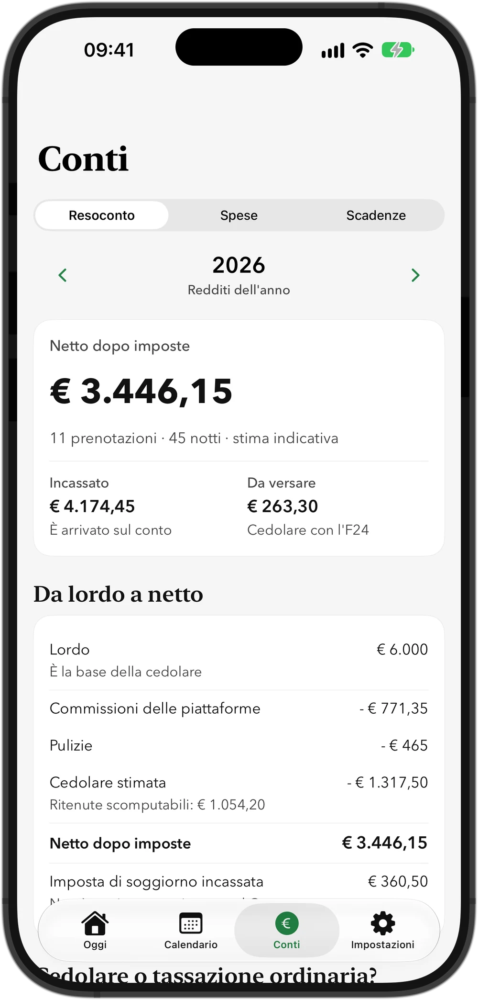
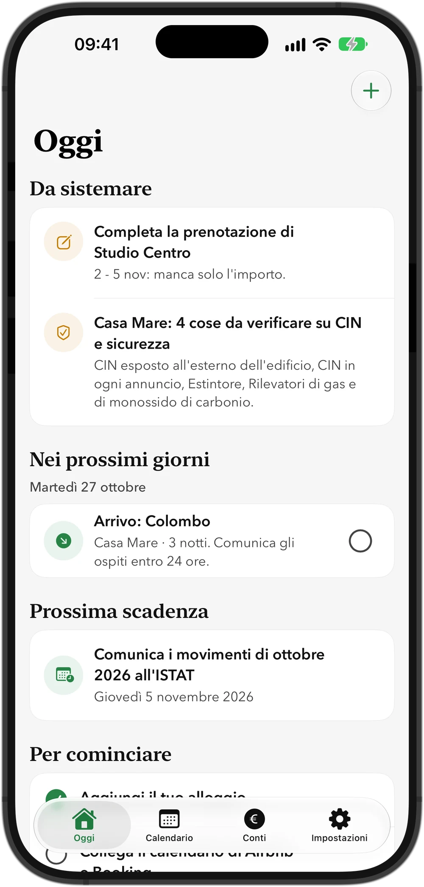
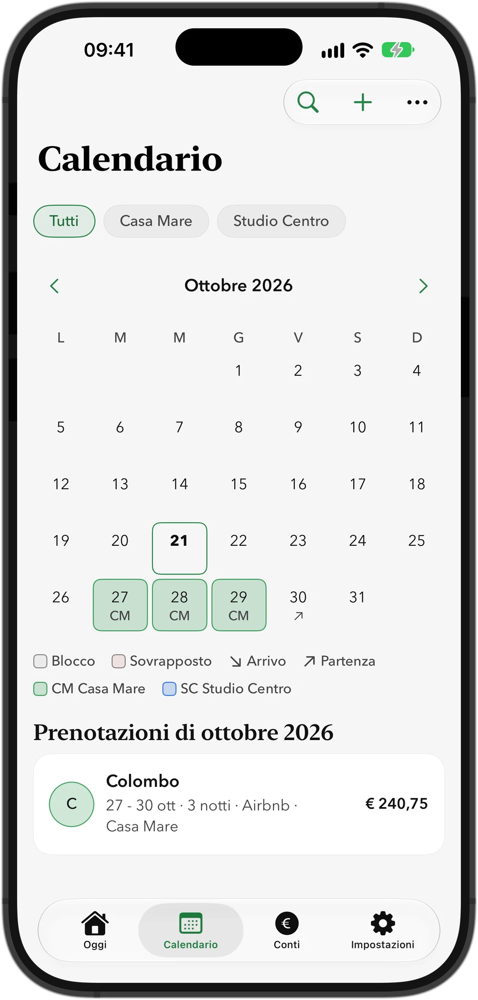
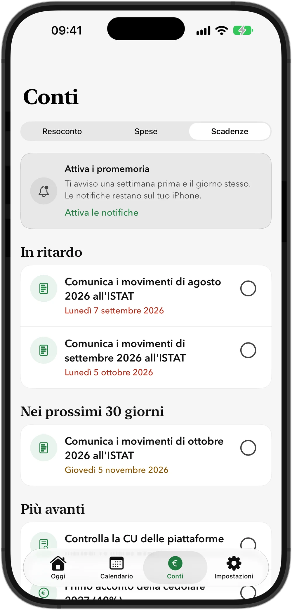

In arrivo su App Store
Quanto ti resta davvero dopo commissioni e tasse.
Quillino Host è l'app per chi affitta casa a brevi periodi in Italia: calendario dei canali, netto vero, CIN, cedolare e scadenze. Senza account e senza fogli Excel.
Il primo alloggio è gratis, i dati restano sul tuo telefono

Due app, due modi di affittare.
Affitti lunghi
Contratti 4+4, 3+2 o a canone concordato: chi ha pagato, registro, ISTAT, disdette, cedolare e report per il 730.
Vai a QuillinoAffitti brevi
Airbnb, Booking.com e prenotazioni dirette: netto dopo commissioni, CIN, cedolare al 21% o 26%, Alloggiati Web e imposta di soggiorno.
Sei qui: Quillino HostQuello che ti serve per affittare a brevi periodi.
Le regole fiscali e burocratiche cambiano spesso. L'app le tiene in ordine e ti dice cosa fare, alloggio per alloggio.
Il netto, non solo il lordo
Scrivi il lordo: commissione, ritenuta, pulizie e imposta di soggiorno si precompilano con le tue abitudini. Vedi cosa ti resta dopo commissioni e cedolare e cosa devi ancora versare con l'F24.
Un calendario per tutti i canali
Colleghi il link iCal del portale su cui ricevi le prenotazioni, oppure le inserisci a mano. Le date arrivano da sole e le sovrapposizioni si vedono subito.
CIN e sicurezza
Per ogni alloggio le spunte su CIN esposto e negli annunci, estintore e rilevatori di gas e di monossido. È un promemoria: l'app non attesta la conformità.
Scadenze senza pensieri
Saldo e acconti della cedolare, controllo della CU di marzo, imposta di soggiorno, comunicazione ISTAT e arrivi da comunicare, con promemoria che restano sul tuo iPhone.
Ospiti e Questura
Raccogli i dati degli ospiti, anche leggendo il documento con la fotocamera, e ottieni il file nel formato di Alloggiati Web. L'app non invia niente: il file lo carichi tu.
Casa intera o camera per camera
Il calendario distingue le camere e non le segna come sovrapposte. Il costo di pulizia è per camera e l'occupazione si conta anche per camera.
Spese e ricevute
Registra le spese con la foto dello scontrino e le spese fisse di ogni alloggio, come assicurazione, internet e utenze: si registrano da sole a ogni scadenza.
Il report per il commercialista
PDF e CSV con totali, CIN e righi della dichiarazione, note di metodo e la tua quota in caso di comproprietà.
Com'è fatta.



Gratis per cominciare, Pro quando serve.
Gratis
Un alloggio, calendario, prenotazioni, netto e scadenze. Senza carta e senza account.
Quillino Pro
Alloggi illimitati, importazione CSV, report per il commercialista, spese, controllo della CU, imposta di soggiorno per Comune, file per Alloggiati Web e ISTAT, ricevute per gli ospiti e widget. Abbonamento annuale con 7 giorni di prova, mensile, oppure acquisto unico a vita.
I prezzi li vedi nell'app prima di ogni acquisto. Se il Pro scade, i tuoi dati restano e l'esportazione resta gratuita.
Le risposte veloci.
Quando esce Quillino Host?
Quillino Host è gratis?
Funziona con Airbnb e Booking.com?
L'app comunica gli ospiti alla Questura?
Serve un account? Dove vanno i miei dati?
Posso usare Quillino e Quillino Host insieme?
I conti sono affidabili?
Informazioni generali, non consulenza fiscale: importi e scadenze vanno verificati con il tuo commercialista o con un CAF. Airbnb, Booking.com e gli altri nomi citati appartengono ai rispettivi proprietari; Quillino Host non è affiliata a nessuno di loro.